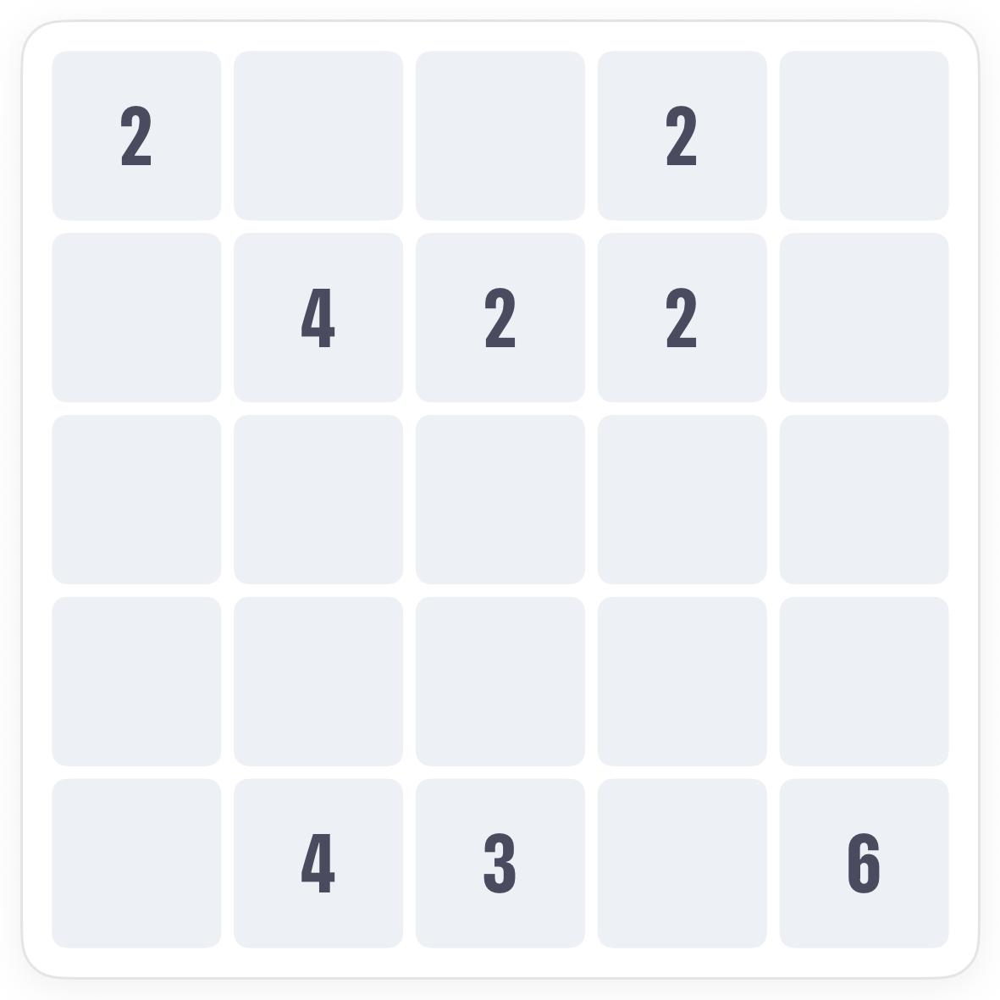
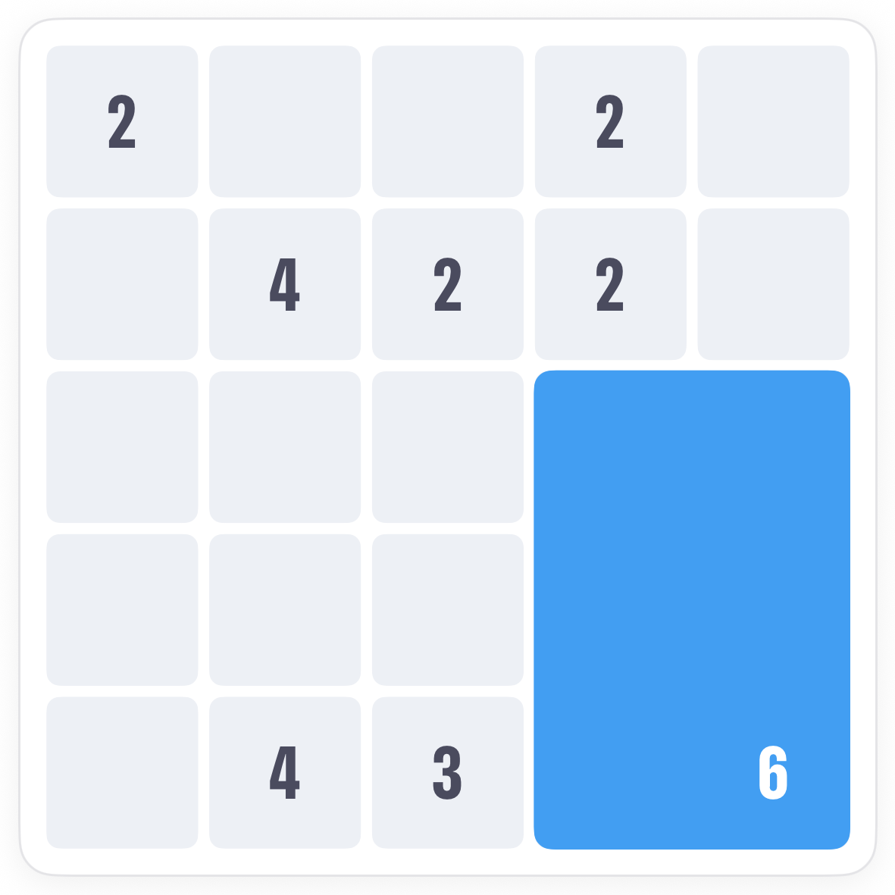
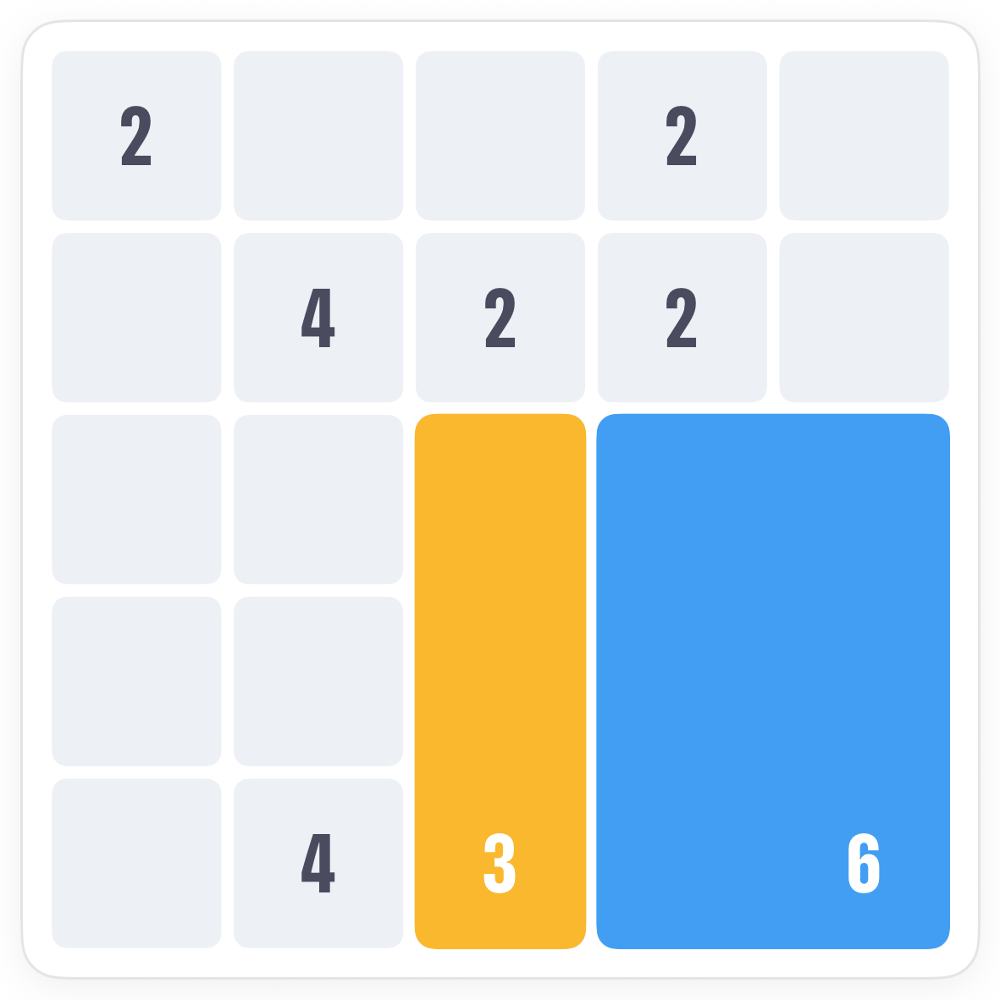
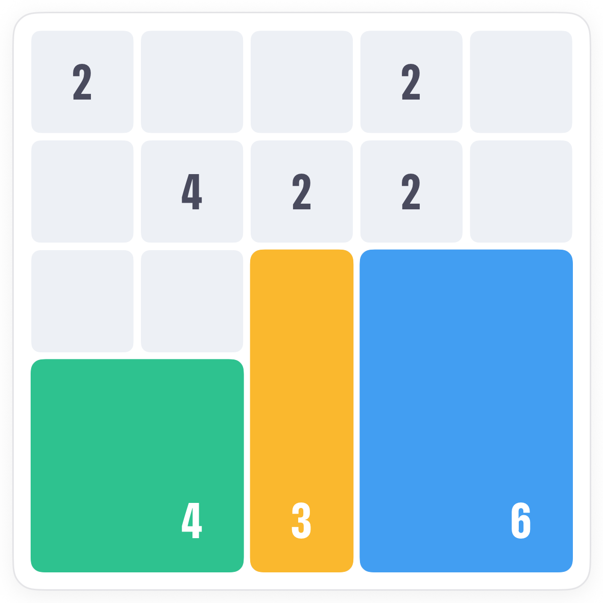
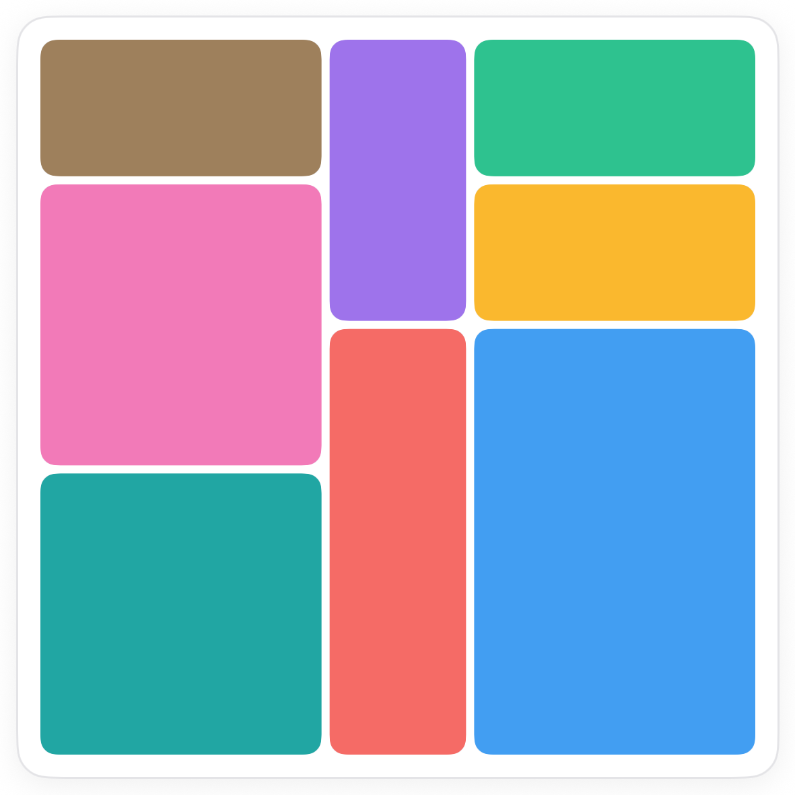

How to play Quilts.
Quilts is Pocketful's Shikaku. Split the whole grid into rectangles so that every number sits inside its own patch, and the number is the patch's size. Corners and crowded numbers give you the first moves.
The board.
A 5 by 5 grid with numbers in some squares. Every square will end up inside exactly one rectangle, and every rectangle contains exactly one number: its size in squares.

The rule.
Drag from one corner of a patch to the opposite corner to draw it. Tap a patch to remove it. A 6 can be 2 by 3 or 3 by 2 or 1 by 6; whichever fits.
Trick one: a patch cannot hold two numbers.
List the shapes a number could take, then throw out every one that would swallow another number or run off the board. What survives is often a single shape.



Trick two: fill what is left.
Once a few patches are in, the empty space between them is usually a rectangle already. Match it to the number inside it and draw it. The 2's at the top each get the only pair of squares that still reaches them.

Common questions.
Can a patch be a single line?
Yes. A 4 can be 1 by 4 if that is what fits. A 1 is a single square.
What if I draw a patch that is the wrong size?
The app bounces it back. Only a rectangle whose size matches the number inside it will stick.